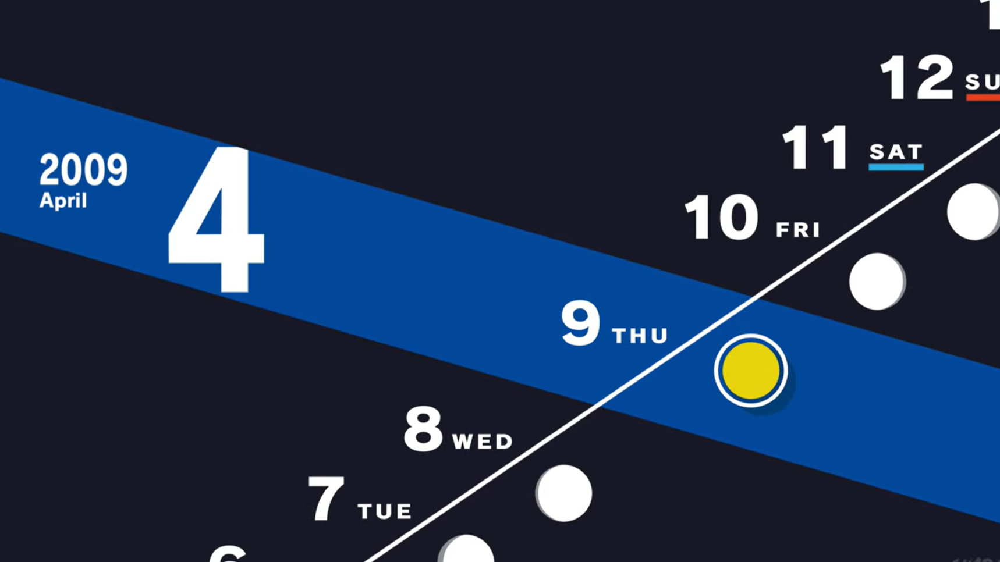

Players Guide:
Starting this game, or any jRPG for that matter is a task on it's own. It makes the beginning of the game, where you sign a contract feel just as heavy as a real one. "All it says is that you accept all consequences as your own." and trust me there will be some consequences
80 Hours, over 100 side quests, and almost 300 floors of the main dungeon "Tartarus"
Fret not however! This story, despite the next games having better pacing, holds your hand for the first in-game month
What's that? Months? Calendars? That's right! Persona is famous for having the games take place within an in-game year. The opening of the game sets this up immediately telling you as the player "You have one year."
The Daytime/Calendar Cycle
Like previously mentioned, the game takes place within an in-game year. You start on April 9th 2009 at the beginning of the Japanese school year. Each day you have 2-3 opportunities to do things.
Daytime
On school days, you can use the school facilities to buy items, raise knowledge points, or build up your relationships with your friends (more on that later.) When school days switch to evening, you have a few less things to do (especially in the beginning)
Evening
Evenings offer a few extra options that normally aren't available. You may be able to get a speical offer on a burger that will raise your courage, or a store may open up only at night with offers to raise some other stats.
Takeaway
The main gameplay loop always starts with the player living out daily life on a 2 or 3 activity per day schedule. On days with no school you have more time to do things, but days with school offer different things to do. After all this is an RPG so strategy is always present on how you spend you time and what attributes you decide to increase for yourself.
